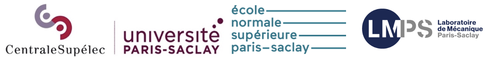

Open positions
MINERVE Project
PhD position in knowledge- and data-driven Artificial Intelligence for computational Civil and Environmental Engineering
Cognitive twins for railway infrastructure asset performance simulation through knowledge-driven artificial intelligence
- Keywords: artificial intelligence, knowledge representation and reasoning, semantics, cognitive digital twin, railway infrastructure lifecycle, data flow, knowledge graph, ontologies
- Download offer here
Post-doctoral positions
Offers to come…
GEOPONT Project
Post-doctoral position in computational mechanics for bridge structural health monitoring
- Keywords: Structural Health Monitoring, Finite Element Method, wave propagation, structural vibration / acoustics, reinforced concrete, signal processing, digital twin
- Download offer here
Workplace description

The PhD candidates and post-doctoral fellows are appointed in the Laboratoire de Mécanique Paris-Saclay (LMPS) at Université Paris-Saclay. The LMPS (UMR 9026, Université Paris-Saclay / CentraleSupélec / ENS Paris-Saclay / CNRS) is dedicated to research on all aspects of solid mechanics (mechanics of materials and structures, civil engineering, fine experimentation, and efficient numerical modeling). The LMPS has about 220 members, including 110 PhD students and postdocs and 35 engineers, technicians and administrative staff on two sites of Paris-Saclay University: CentraleSupélec and ENS Paris-Saclay, both in Gif-sur-Yvette.
The LMPS hosts four research teams. The PhD candidates will join the OMEIR team (Structures, Materials, Environment, Interactions, and Risks). The team contributes to the energy, ecological, and digital transitions of all fields related to cities and infrastructures. It brings together the expertise of research groups specializing in construction and natural materials, the modeling of various physical phenomena (mechanical, thermal, hydric, chemical), advanced experimentation, natural risks, large-scale and advanced numerical simulations, and statistical learning. The associated societal issues in the field of construction in the broadest sense (building, structures, public works, civil engineering, etc.) highlight essential questions related to the ecological and social impacts of human activities concerning not only the resilience of society, but also those associated with information technologies which are disrupting the practices of the sector. In this respect, three important points can be highlighted: the reduction of the ecological footprints of structures; the evaluation and reduction of the vulnerability of constructions (with economic and human impact) subject to hazards/risks, natural or otherwise; the transition from digital models to true digital twins combining multi-physics simulation, data assimilation, and advanced experiments.